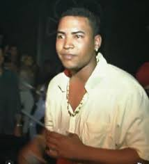

Don Omar, cuyo nombre real es William Omar Landrón Rivera, nació el 10 de febrero de 1978 en Puerto Rico. Desde joven, mostró interés por la música y comenzó su carrera en el mundo del reguetón en los años 90.
Inició su carrera en la iglesia, donde participaba como pastor y cantaba en coros.
Su amor por la música urbana lo llevó a colaborar con DJ Eliel y otros artistas emergentes en la escena del reguetón.
Fue descubierto por Héctor "El Father", quien lo ayudó a abrirse camino en la industria.
En 2003, lanzó su primer álbum "The Last Don", el cual fue un gran éxito e impulsó su carrera internacional.